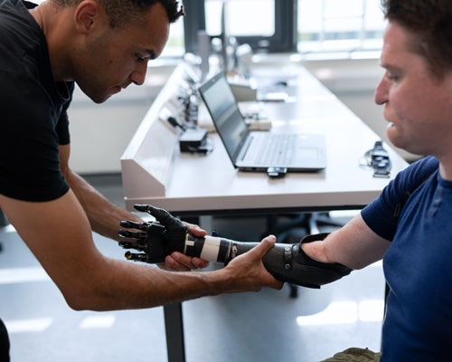

Indigenous Games as Movement Therapy: Bridging African Heritage and Biomechanics
Discover how traditional African games—Diketo, Morabaraba, Kgati, and Dibeke—provide powerful neuromuscular stimuli for motor development, hand-eye coordination, balance, and community wellness.
Read Full AnalysisEvidence-Based Orthopaedic & Post-Surgical Rehabilitation
Why progressive load tolerance, kinetic chain alignment, and neuromuscular re-education form the foundation of lasting joint recovery after ACL or rotator cuff surgery.
Read ArticleHarnessing Neuroplasticity: The Role of Biokinetics in Stroke & Spinal Recovery
How repetitive, task-specific motor training and balance perturbations stimulate neural reorganization in patients recovering from neurological trauma.
Read Article
Exercise as Medicine: Managing Hypertension and Type 2 Diabetes
The physiological mechanisms through which prescribed exercise enhances insulin sensitivity, reduces arterial stiffness, and restores metabolic equilibrium.
Read Article
Guidelines for Pre- and Post-Natal Movement
Evidence-based principles for maintaining pelvic girdle integrity, addressing diastasis recti, and safely returning to progressive loading post-delivery.
Read Article